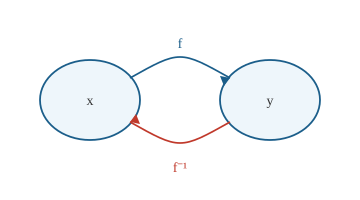
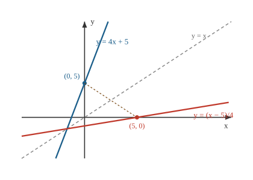

Based on Cambridge International AS & A Level Mathematics: Pure Mathematics 1 Coursebook (Sue Pemberton), Chapter 2, printed pp.43–47 (Key points 2.3–2.4, the inverse method, Worked examples 2.7–2.8 style, Exercise 2C). Printed pages were read from P1.pdf (printed 43–47 = PDF 55–59). Own wording and new numbers. Page 43 overlaps the end of Exercise 2B.
Key words: inverse function, self-inverse function, one-one function
The inverse function \(f^{-1}\) is the function that undoes what \(f\) has done. The domain of the function \(f^{-1}\) is the range of the function \(f\), and the range of the function \(f^{-1}\) is the domain of the function \(f\). An inverse exists if, and only if, \(f\) is a one-one mapping. If a many-one rule is restricted to a one-one part of its domain, an inverse can then be found on that restricted domain.

To find a formula for \(f^{-1}(x)\), write \(y=f(x)\), interchange \(x\) and \(y\), and rearrange to make \(y\) the subject. The resulting expression is \(f^{-1}(x)\). If \(f\) and \(f^{-1}\) are the same function, \(f\) is called a self-inverse function. For example, \(f(x)=\dfrac{1}{x}\) for \(x\neq 0\) is self-inverse.
Interchanging \(x\) and \(y\) is the same as reflecting the graph of \(y=f(x)\) in the line \(y=x\). The image is the graph of \(y=f^{-1}(x)\).

Book: the three-step method on printed p.44. New numbers.
The function \(f\) is given by \(f(x)=4x+5\) for \(x\in\mathbb{R}\). Find an expression for \(f^{-1}(x)\).
Answer: \(f^{-1}(x)=\dfrac{x-5}{4}\)
Book: Worked example 2.7 style, printed pp.44–45. New numbers.
\(f(x)=\sqrt{x-1}+2\) for \(x\in\mathbb{R}\), \(x\geqslant 1\). Find an expression for \(f^{-1}(x)\) and state the domain of \(f^{-1}\).
Answer: \(f^{-1}(x)=(x-2)^2+1\) for \(x\geqslant 2\)
If \(f(x)=3x-1\), what is the value of \(f^{-1}(8)\)?
Answer: \(3\)
The function \(f(x)=5-x\) is self-inverse. What is the value of \(f^{-1}(2)\)?
Answer: \(3\)
The function \(f\) is given by \(f(x)=\sqrt{x+2}-7\) for \(x\geqslant -2\). The domain of \(f^{-1}\) is \(x\geqslant k\). What is the value of \(k\)?
Answer: \(-7\)
Marks: M = method, A = accurate answer (depends on M), B = independent mark. Leave exact values exact.